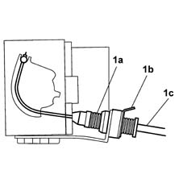

1068A10 accelerator pedal control - check, adjust if necessary and lubricate
- Path
- Procedures > 10 ENGINE UNIT > 1068 ACCELERATOR CONTROLS > 1068A accelerator pedal control > 1068A10 accelerator pedal control - check, adjust if necessary and lubricate
- Kind
- repair procedure (removal / refitting; the operation number is the code)
- Applies to
- engines: 1.6 16v; all production periods
- Interactive page
- https://sloeber94.github.io/elrnDB-fMltpl/en/#/2891273
Applies to: engines: 1.6 16v; all production periods
Check the accelerator control pedal is correctly adjusted.
Open the bonnet lid.
With the pedal at rest, pull the accelerator cable through a travel of 3-6 mm and ensure the throttle valve does not open.
If the valve opens, adjust pedal position as follows.
Ensure the accelerator pedal is in rest position.
Remove the cable clip.
1. Adjust the sleeve of cable (1a) by moving it forward or backward and then lock with clip (1b). Adjust cable (1c), checking that when the pedal is fully released (at rest) the throttle valve is closed (cable not under tension) and when the pedal is fully depressed (at the end of its travel) the throttle valve is fully open (cable under tension).

Applies to: engines: 1.6 16v; all production periods
After adjustment, with the pedal at rest, pull the accelerator cable through a travel of 3-6 mm, ensuring that the throttle valve does not open.
Close the bonnet lid.